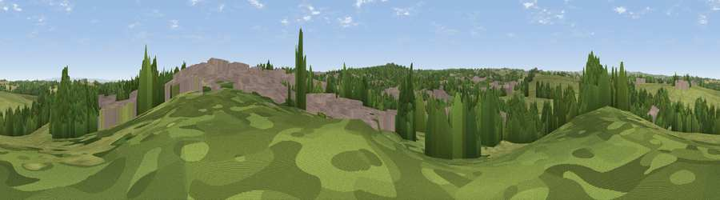

Viewpoint near Killinghall
#39910 in England · top 82% of its area beats it · near KillinghallThe view, rendered

A 360° render of this exact spot computed from the terrain model, tree cover and land cover — summer colours, afternoon light, calibrated against photographs of famous viewpoints. Real trees, hedges and buildings will differ in detail.
The panorama
Grey silhouette: terrain skyline in each direction (720 bearings, Earth curvature and refraction included). Dashed green: skyline with trees (+15 m) and buildings (+8 m) as obstacles. Blue strip: how far the ground is visible on each bearing.
Where the view opens
Wedge length = distance to the farthest visible ground on that bearing (vegetation-aware). Rings at 10, 25 and 50 km.
What fills the view
41% grassland · 31% woodland · 26% built-up · 3% cropland
Angular shares of the visible panorama (visual magnitude), not map area. Landscape diversity 0.52 (0–1 Shannon).
Key numbers
More beautiful places nearby
The staircase of upgrades: each row has a higher view potential than everything closer. Driving times are estimates from straight-line distance, calibrated against real road routing — check an actual route before setting out.
| Place | Direction | Drive | Score |
|---|---|---|---|
| Warren Top | W · 2 km | ~4 min | 47.0 |
| Harlow Hill | SSW · 3 km | ~8 min | 52.7 |
| Viewpoint near Hampsthwaite | W · 3 km | ~8 min | 54.2 |
| Viewpoint near Burton Leonard | NE · 6 km | ~13 min | 55.2 |
| Gibbet Hill | ENE · 7 km | ~14 min | 57.0 |
| Viewpoint near Pannal | SSE · 7 km | ~15 min | 57.1 |
| Walton Head Whin | S · 7 km | ~15 min | 60.5 |
| Viewpoint near North Rigton | SSW · 9 km | ~17 min | 66.6 |
54.01065, -1.55020 · source: screening · position refined by local search. Computed location — check access rights before visiting.